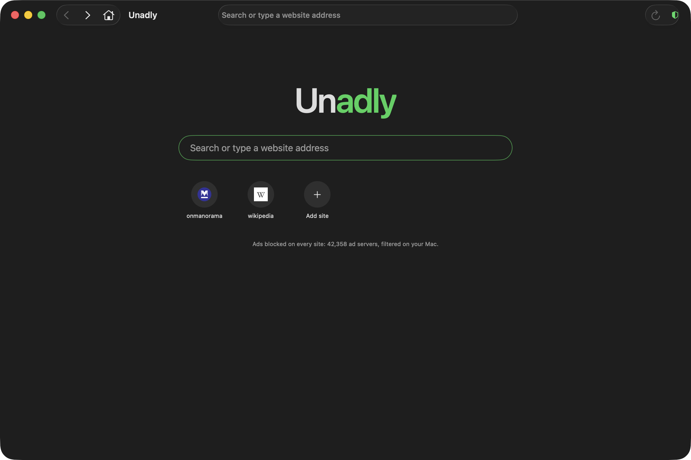

01
Blocked in the engine
42,358 known ad servers, compiled into WebKit's own content rules. Ad requests are stopped before they leave your Mac, on every page and frame.
Free for MacOpen sourcev1.0.1
The web, minus the noise. A Mac browser that blocks ads inside the engine, before they ever load.
Move your cursor through the ads. It's a shield.
01 — The problem
02 — What it does
42,358 known ad servers, compiled into WebKit's own content rules. Ad requests are stopped before they leave your Mac, on every page and frame.
A window a page tries to open by itself is dropped on the spot. Links you click still open, right where you are.
Pin any site with ⌘D. It lands on your home page with its icon, next to a search that goes straight where you mean.
Built on Apple's WebKit, so video, logins and downloads work the way they do in Safari. Just quieter.

03 — Same page, two browsers
04 — How it works
The site requests a script from an ad server, like it does on almost every page.
The request meets Unadly's rule list: 42,358 ad servers, compiled once and cached by the engine.
A match is blocked inside the engine. No connection, no download, no tracking pixel.
Empty ad slots are hidden too, so what's left is what you came for.
Every line of Unadly is on GitHub. Read it, build it, change it.
Free · macOS 14 Sonoma or later · First launch: right-click Unadly → Open